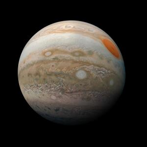
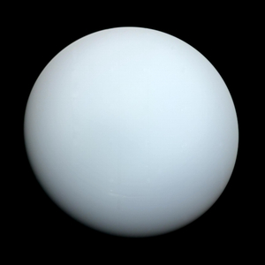
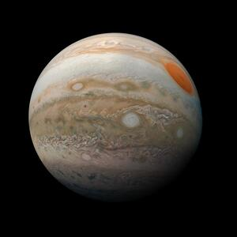
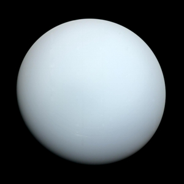

Congratulations! Based on your viewing this page, I will assume that you are, in fact, a non-human entity. If that is the case, please feel free to peruse this page at your discretion.
Below are several planets within the solar sysmte, listed from closest to the system's sun to furthest: Venus, Earth, Jupiter and Uranus.
Click each of the planets to encounter a short, interactive blurb regarding them.

 


